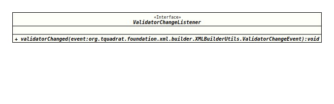

Module org.tquadrat.foundation.xml
Interface XMLBuilderUtils.ValidatorChangeListener
- Enclosing class:
- XMLBuilderUtils
- Functional Interface:
- This is a functional interface and can therefore be used as the assignment target for a lambda expression or method reference.
@FunctionalInterface
@ClassVersion(sourceVersion="$Id: XMLBuilderUtils.java 840 2021-01-10 21:37:03Z tquadrat $")
@API(status=STABLE,
since="0.0.5")
public static interface XMLBuilderUtils.ValidatorChangeListener
The interface for listeners to
XMLBuilderUtils.ValidatorChangeEvents- Author:
- Thomas Thrien (thomas.thrien@tquadrat.org)
- Version:
- $Id: XMLBuilderUtils.java 840 2021-01-10 21:37:03Z tquadrat $
- Since:
- 0.0.5
- UML Diagram
-

UML Diagram for "org.tquadrat.foundation.xml.builder.XMLBuilderUtils.ValidatorChangeListener"
{kind=link}
-
Method Summary
Modifier and TypeMethodDescriptionvoidThis method gets called each time a validator changes.
-
Method Details
-
validatorChanged
This method gets called each time a validator changes.- Parameters:
event- The change event.
-